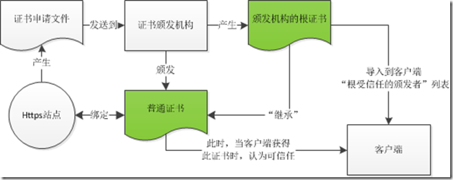

<!DOCTYPE html>
<html>
<head><meta name="generator" content="Hexo 3.8.0">
  <meta charset="utf-8">
  

  
  <title>浅谈https\ssl\数字证书 | 达合</title>
  <meta name="viewport" content="width=device-width, initial-scale=1, maximum-scale=1">
  <meta name="description" content="在互联网安全通信方式上，目前用的最多的就是https配合ssl和数字证书来保证传输和认证安全了。本文追本溯源围绕这个模式谈一谈。 名词解释首先解释一下上面的几个名词： https：在http(超文本传输协议)基础上提出的一种安全的http协议，因此可以称为安全的超文本传输协议。http协议直接放置在TCP协议之上，而https提出在http和TCP中间加上一层加密层。从发送端看，这一层负责把htt">
<meta name="keywords" content="达合">
<meta property="og:type" content="article">
<meta property="og:title" content="浅谈https\ssl\数字证书">
<meta property="og:url" content="http://www.daahe.com/2018/11/26/ssl/index.html">
<meta property="og:site_name" content="达合">
<meta property="og:description" content="在互联网安全通信方式上，目前用的最多的就是https配合ssl和数字证书来保证传输和认证安全了。本文追本溯源围绕这个模式谈一谈。 名词解释首先解释一下上面的几个名词： https：在http(超文本传输协议)基础上提出的一种安全的http协议，因此可以称为安全的超文本传输协议。http协议直接放置在TCP协议之上，而https提出在http和TCP中间加上一层加密层。从发送端看，这一层负责把htt">
<meta property="og:locale" content="default">
<meta property="og:image" content="http://www.daahe.com/2018/11/26/ssl/201012272252229109.png">
<meta property="og:updated_time" content="2018-11-26T04:44:02.000Z">
<meta name="twitter:card" content="summary">
<meta name="twitter:title" content="浅谈https\ssl\数字证书">
<meta name="twitter:description" content="在互联网安全通信方式上，目前用的最多的就是https配合ssl和数字证书来保证传输和认证安全了。本文追本溯源围绕这个模式谈一谈。 名词解释首先解释一下上面的几个名词： https：在http(超文本传输协议)基础上提出的一种安全的http协议，因此可以称为安全的超文本传输协议。http协议直接放置在TCP协议之上，而https提出在http和TCP中间加上一层加密层。从发送端看，这一层负责把htt">
<meta name="twitter:image" content="http://www.daahe.com/2018/11/26/ssl/201012272252229109.png">
  
    <link rel="alternate" href="/atom.xml" title="达合" type="application/atom+xml">
  
  
    <link rel="icon" href="/favicon.png">
  
  
    <!-- link href="//fonts.googleapis.com/css?family=Source+Code+Pro" rel="stylesheet" type="text/css" -->
    <link href="https://fonts.googleapis.cnpmjs.org/css?family=Source+Code+Pro" rel="stylesheet" type="text/css">

  
  <link rel="stylesheet" href="/css/style.css">
</head>
</html>
<body>
  <div id="container">
    <div id="wrap">
      <header id="header">
  <div id="banner"></div>
  <div id="header-outer" class="outer">
    <div id="header-title" class="inner">
      <h1 id="logo-wrap">
        <a href="/" id="logo">达合</a>
      </h1>
      
        <h2 id="subtitle-wrap">
          <a href="/" id="subtitle">天地达 人自合</a>
        </h2>
      
    </div>
    <div id="header-inner" class="inner">
      <nav id="main-nav">
        <a id="main-nav-toggle" class="nav-icon"></a>
        
          <a class="main-nav-link" href="/">Home</a>
        
          <a class="main-nav-link" href="/archives">Archives</a>
        
      </nav>
      <nav id="sub-nav">
        
          <a id="nav-rss-link" class="nav-icon" href="/atom.xml" title="RSS Feed"></a>
        
        <a id="nav-search-btn" class="nav-icon" title="Search"></a>
      </nav>
      <div id="search-form-wrap">
        <form action="//google.com/search" method="get" accept-charset="UTF-8" class="search-form"><input type="search" name="q" class="search-form-input" placeholder="Search"><button type="submit" class="search-form-submit">&#xF002;</button><input type="hidden" name="sitesearch" value="http://www.daahe.com"></form>
      </div>
    </div>
  </div>
</header>
      <div class="outer">
        <section id="main"><article id="post-ssl" class="article article-type-post" itemscope="" itemprop="blogPost">
  <div class="article-meta">
    <a href="/2018/11/26/ssl/" class="article-date">
  <time datetime="2018-11-26T04:18:57.000Z" itemprop="datePublished">2018-11-26</time>
</a>
    
  </div>
  <div class="article-inner">
    
    
      <header class="article-header">
        
  
    <h1 class="article-title" itemprop="name">
      浅谈https\ssl\数字证书
    </h1>
  

      </header>
    
    <div class="article-entry" itemprop="articleBody">
      
        <p>在互联网安全通信方式上，目前用的最多的就是https配合ssl和数字证书来保证传输和认证安全了。本文追本溯源围绕这个模式谈一谈。</p>
<p>名词解释<br>首先解释一下上面的几个名词：</p>
<p>https：在http(超文本传输协议)基础上提出的一种安全的http协议，因此可以称为安全的超文本传输协议。http协议直接放置在TCP协议之上，而https提出在http和TCP中间加上一层加密层。从发送端看，这一层负责把http的内容加密后送到下层的TCP，从接收方看，这一层负责将TCP送来的数据解密还原成http的内容。<br>SSL(Secure Socket Layer)：是Netscape公司设计的主要用于WEB的安全传输协议。从名字就可以看出它在https协议栈中负责实现上面提到的加密层。因此，一个https协议栈大致是这样的：<br></p>
<a id="more"></a>
<p>数字证书：一种文件的名称，好比一个机构或人的签名，能够证明这个机构或人的真实性。其中包含的信息，用于实现上述功能。<br>加密和认证：加密是指通信双方为了防止铭感信息在信道上被第三方窃听而泄漏，将明文通过加密变成密文，如果第三方无法解密的话，就算他获得密文也无能为力；认证是指通信双方为了确认对方是值得信任的消息发送或接受方，而不是使用假身份的骗子，采取的确认身份的方式。只有同时进行了加密和认真才能保证通信的安全，因此在SSL通信协议中这两者都被应。<br>因此，这三者的关系已经十分清楚了：https依赖一种实现方式，目前通用的是SSL，数字证书是支持这种安全通信的文件。另外有SSL衍生出TLS和WTLS，前者是IEFT将SSL标准化之后产生的（TSL1.0），与SSL差别很小，后者是用于无线环境下的TSL。</p>
<p>如何加密<br>常用的加密算法<br>对称密码算法：是指加密和解密使用相同的密钥，典型的有DES、RC5、IDEA（分组加密），RC4（序列加密）；<br>非对称密码算法：又称为公钥加密算法，是指加密和解密使用不同的密钥（公开的公钥用于加密，私有的私钥用于解密）。比如A发送，B接收，A想确保消息只有B看到，需要B生成一对公私钥，并拿到B的公钥。于是A用这个公钥加密消息，B收到密文后用自己的与之匹配的私钥解密即可。反过来也可以用私钥加密公钥解密。也就是说对于给定的公钥有且只有与之匹配的私钥可以解密，对于给定的私钥，有且只有与之匹配的公钥可以解密。典型的算法有RSA，DSA，DH；<br>散列算法：散列变换是指把文件内容通过某种公开的算法，变成固定长度的值（散列值），这个过程可以使用密钥也可以不使用。这种散列变换是不可逆的，也就是说不能从散列值变成原文。因此，散列变换通常用于验证原文是否被篡改。典型的算法有：MD5，SHA，Base64，CRC等。<br>在散列算法（也称摘要算法）中，有两个概念，强无碰撞和弱无碰撞。弱无碰撞是对给定的消息x，就是对你想伪造的明文，进行运算得出相同的摘要信息。也就是说你可以控制明文的内容。强无碰撞是指能找到相同的摘要信息，但伪造的明文是什么并不知道。</p>
<p>SSL的加密过程<br>需要注意的是非对称加解密算法的效率要比对称加解密要低的多。所以SSL在握手过程中使用非对称密码算法来协商密钥，实际使用对称加解密的方法对http内容加密传输。下面是对这一过程的形象的比喻（摘自<a href="http://blog.chinaunix.net/u2/82806/showart_1341720.html）：" target="_blank" rel="noopener">http://blog.chinaunix.net/u2/82806/showart_1341720.html）：</a></p>
<p>假设A与B通信，A是SSL客户端，B是SSL服务器端，加密后的消息放在方括号[]里，以突出明文消息的区别。双方的处理动作的说明用圆括号（）括起。</p>
<p>A：我想和你安全的通话，我这里的对称加密算法有DES,RC5,密钥交换算法有RSA和DH，摘要算法有MD5和SHA。</p>
<p>B：我们用DES－RSA－SHA这对组合好了。</p>
<p>这是我的证书，里面有我的名字和公钥，你拿去验证一下我的身份（把证书发给A）。</p>
<p>A：（查看证书上B的名字是否无误，并通过手头早已有的数字的证书验证了B的证书的真实性，如果其中一项有误，发出警告并断开连接，这一步保证了B的公钥的真实性）</p>
<p>（产生一份秘密消息，这份秘密消息处理后将用作对称加密密钥，加密初始化向量和hmac的密钥。将这份秘密消息-协议中称为per_master_secret-用B的公钥加密，封装成称作ClientKeyExchange的消息。由于用了B的公钥，保证了第三方无法窃听）</p>
<p>我生成了一份秘密消息，并用你的公钥加密了，给你（把ClientKeyExchange发给B）</p>
<p>注意，下面我就要用加密的办法给你发消息了！</p>
<p>（将秘密消息进行处理，生成加密密钥，加密初始化向量和hmac的密钥）</p>
<p>[我说完了]</p>
<p>B：（用自己的私钥将ClientKeyExchange中的秘密消息解密出来，然后将秘密消息进行处理，生成加密密钥，加密初始化向量和hmac的密钥，这时双方已经安全的协商出一套加密办法了）</p>
<p>注意，我也要开始用加密的办法给你发消息了！</p>
<p>[我说完了]</p>
<p>A: [我的秘密是…]</p>
<p>B: [其它人不会听到的…]</p>
<p>从上面的过程可以看到，SSL协议是如何用非对称密码算法来协商密钥，并使用密钥加密明文并传输的。还有以下几点补充：</p>
<p>1.B使用数字证书把自己的公钥和其他信息包装起来发送A，A验证B的身份，下面会谈到A是如何验证的。</p>
<p>2.A生成了了加密密钥、加密初始化向量和hmac密钥是双方用来将明文摘要和加密的。加密初始化向量和hmac密钥首先被用来对明文摘要（防止明文被篡改），然后这个摘要和明文放在一起用加密密钥加密后传输。</p>
<p>3.由于只有B有私钥，所以只有B可以解密ClientKeyExchange消息，并获得之后的通信密钥。</p>
<p>4.事实上，上述过程B没有验证A的身份，如果需要的话，SSL也是支持的，此时A也需要提供自己的证书，这里就不展开了。在设置IIS的SSL Require的时候，通常默认都是igore client certification的。</p>
<p>数字证书<br>由上面的讨论可以知道，数字证书在ssl传输过程中扮演身份认证和密钥分发的功能。究竟什么是数字证书呢？</p>
<p>简而言之数字证书是一种网络上证明持有者身份的文件，同时还包含有公钥。一方面，既然是文件那么就有可能“伪造”，因此，证书的真伪就需要一个验证方式；另一方面，验证方需要认同这种验证方式。</p>
<p>对于第一个需求，目前的解决方案是，证书可以由国际上公认的证书机构颁发，这些机构是公认的信任机构，一些验证证书的客户端应用程序：比如浏览器，邮件客户端等，对于这些机构颁发的证书完全信任。当然想要请这些机构颁发证书可是要付“到了斯”的，通常在windows部署系统的时候会让客户端安装我们自己服务器的根证书，这样客户端同样可以信任我们的证书。</p>
<p>对于第二个需求，客户端程序通常通过维护一个“根受信任机构列表”，当收到一个证书时，查看这个证书是否是该列表中的机构颁发的，如果是则这个证书是可信任的，否则就不信任。</p>
<p>证书的信任<br>因此作为一个https的站点需要与一个证书绑定，无论如何，证书总是需要一个机构颁发的，这个机构可以是国际公认的证书机构，也可以是任何一台安装有证书服务的计算机。客户端是否能够信任这个站点的证书，首先取决于客户端程序是否导入了证书颁发者的根证书。下图说明了这个流程：</p>
<p>image</p>
<p>有时一个证书机构可能授权另一个证书机构颁发证书，这样就出现了证书链。</p>
<p>IE浏览器在验证证书的时候主要从下面三个方面考察，只要有任何一个不满足都将给出警告</p>
<p>证书的颁发者是否在“根受信任的证书颁发机构列表”中<br>证书是否过期<br>证书的持有者是否和访问的网站一致<br>另外，浏览器还会定期查看证书颁发者公布的“证书吊销列表”，如果某个证书虽然符合上述条件，但是被它的颁发者在“证书吊销列表”中列出，那么也将给出警告。每个证书的CRL Distribution Point字段显示了查看这个列表的url。尽管如此，windows对于这个列表是“不敏感”的，也就是说windows的api会缓存这个列表，直到设置的缓存过期才会再从CRL Distribution Point中下载新的列表。目前，只能通过在证书颁发服务端尽量小的设置这个有效期（最小1天），来尽量使windows的客户端“敏感”些。具体设置方法为（winserver2003）：</p>
<p>进入管理员工具-&gt;证书机构-&gt;右击某个证书服务下的“吊销的证书”目录-&gt;属性：</p>
<p>image</p>
<p>按图中的设置，将CRL发布周期改为1天。</p>
<p>IIS中部署基于数字证书的https网站<br>在IIS6中构建一个https网站需要如下几个关键步骤：</p>
<p>安装CA认证服务：此步骤不是必要的。如果网络中还没有那台主机安装过CA认证服务，或者确实需要建个新的CA认证服务，那么就需要在某台主机上安装CA认证服务。这是windows自带的功能，默认不安装。如果装了，就意味这这台主机具有颁发证书的能力，只要安装有这台主机的根证书的客户端会信任这台主机颁发的证书。在windows server 2003中的安装步骤，详见<a href="http://jeffyyko.blog.51cto.com/28563/140518" target="_blank" rel="noopener">http://jeffyyko.blog.51cto.com/28563/140518</a><br>向CA认证服务提交证书申请，并将获得的证书跟网站绑定：详见<a href="http://jeffyyko.blog.51cto.com/28563/141322" target="_blank" rel="noopener">http://jeffyyko.blog.51cto.com/28563/141322</a><br>要求客户端导入根证书，以使客户端信任该证书：详见<a href="http://jeffyyko.blog.51cto.com/28563/142280" target="_blank" rel="noopener">http://jeffyyko.blog.51cto.com/28563/142280</a></p>
<p>证书与密钥<br>在ssl的加密过程一节中，我们知道要实现ssl加密通信，必须要双方协商密钥，ssl采用的是非对称加密来实现密钥交换。在这个过程中，服务端向客户端发送的公钥就包含在证书中。客户端将自己生成的密钥用公钥加密，服务端用于公钥匹配的私钥解密。因此，可以想到的是，服务端保存了一个私钥，并且也与https的站点绑定了。</p>
<p>绑定私钥和不绑定私钥的证书<br>从证书持有者是否拥有证书的私钥，可以把证书分为两种：如下图，当我们的本机拥有证书的私钥时如左图，否则如右图：</p>
<p>image image</p>
<p>可以看到，左图标识了“你拥有与该证书相匹配的私钥”，而右图没有。对于需要与https站点绑定的证书必须是左图的形式，分发给客户端安装的应该是右图的形式，而不该是左图的形式。</p>
<p>对于左图的证书可以将还有导出含有私钥的.pfx格式，用于备份证书或者分发，步骤如下：</p>
<p> image</p>
<p>image</p>
<p>image</p>
<p>选择同时导出私钥</p>
<p>image </p>
<p>image</p>
<p>这里输入的密码在重新安装的时候要输入，所以要comfirm一下。</p>
<p>image</p>
<p>选择一个文件存放，后缀自动为.pfx</p>
<p> image</p>
<p>对于普通的证书，不能导出含有私钥的.pfx形式，只能导出下面三种格式：</p>
<p>image</p>
<p>总结<br>本文总结了https/ssl/数字证书的相关基本概念，阐述了ssl协议的实现原理，阐述了数字证书在其中扮演的角色。</p>
<p>转自：<a href="http://www.cnblogs.com/P_Chou/archive/2010/12/27/https-ssl-certification.html" target="_blank" rel="noopener">http://www.cnblogs.com/P_Chou/archive/2010/12/27/https-ssl-certification.html</a></p>

      
    </div>
    <footer class="article-footer">
      <a data-url="http://www.daahe.com/2018/11/26/ssl/" data-id="cjoxu01r300a4qs0fa8ef0nvw" class="article-share-link">Share</a>
      
      
    </footer>
  </div>
  
    
<nav id="article-nav">
  
  
    <a href="/2018/11/13/big-data-architect-skills/" id="article-nav-older" class="article-nav-link-wrap">
      <strong class="article-nav-caption">Older</strong>
      <div class="article-nav-title">大数据架构师该掌握的技能</div>
    </a>
  
</nav>

  
</article>

</section>
        
          <aside id="sidebar">
  
    
  <div class="widget-wrap">
    <h3 class="widget-title">Categories</h3>
    <div class="widget">
      <ul class="category-list"><li class="category-list-item"><a class="category-list-link" href="/categories/Android/">Android</a><ul class="category-list-child"><li class="category-list-item"><a class="category-list-link" href="/categories/Android/j2ee/">j2ee</a><ul class="category-list-child"><li class="category-list-item"><a class="category-list-link" href="/categories/Android/j2ee/Linux/">Linux</a></li></ul></li><li class="category-list-item"><a class="category-list-link" href="/categories/Android/道听途说/">道听途说</a></li></ul></li><li class="category-list-item"><a class="category-list-link" href="/categories/DataCross/">DataCross</a></li><li class="category-list-item"><a class="category-list-link" href="/categories/Flex/">Flex</a></li><li class="category-list-item"><a class="category-list-link" href="/categories/Hibernate/">Hibernate</a></li><li class="category-list-item"><a class="category-list-link" href="/categories/Linux/">Linux</a></li><li class="category-list-item"><a class="category-list-link" href="/categories/j2ee/">j2ee</a></li><li class="category-list-item"><a class="category-list-link" href="/categories/jvm/">jvm</a></li><li class="category-list-item"><a class="category-list-link" href="/categories/redis/">redis</a></li><li class="category-list-item"><a class="category-list-link" href="/categories/数据库/">数据库</a></li><li class="category-list-item"><a class="category-list-link" href="/categories/未分类/">未分类</a></li><li class="category-list-item"><a class="category-list-link" href="/categories/生活/">生活</a><ul class="category-list-child"><li class="category-list-item"><a class="category-list-link" href="/categories/生活/道听途说/">道听途说</a></li></ul></li><li class="category-list-item"><a class="category-list-link" href="/categories/私人日志/">私人日志</a></li><li class="category-list-item"><a class="category-list-link" href="/categories/道听途说/">道听途说</a></li></ul>
    </div>
  </div>


  
    
  <div class="widget-wrap">
    <h3 class="widget-title">Tags</h3>
    <div class="widget">
      <ul class="tag-list"><li class="tag-list-item"><a class="tag-list-link" href="/tags/Android/">Android</a></li><li class="tag-list-item"><a class="tag-list-link" href="/tags/Google-Map/">Google Map</a></li><li class="tag-list-item"><a class="tag-list-link" href="/tags/MapView/">MapView</a></li><li class="tag-list-item"><a class="tag-list-link" href="/tags/UI设计/">UI设计</a></li><li class="tag-list-item"><a class="tag-list-link" href="/tags/datacross/">datacross</a></li><li class="tag-list-item"><a class="tag-list-link" href="/tags/ui/">ui</a></li><li class="tag-list-item"><a class="tag-list-link" href="/tags/xp-启动不输入密码/">xp 启动不输入密码</a></li><li class="tag-list-item"><a class="tag-list-link" href="/tags/切换/">切换</a></li><li class="tag-list-item"><a class="tag-list-link" href="/tags/原则/">原则</a></li><li class="tag-list-item"><a class="tag-list-link" href="/tags/开发/">开发</a></li><li class="tag-list-item"><a class="tag-list-link" href="/tags/数据转换/">数据转换</a></li><li class="tag-list-item"><a class="tag-list-link" href="/tags/格式转换/">格式转换</a></li><li class="tag-list-item"><a class="tag-list-link" href="/tags/横屏/">横屏</a></li><li class="tag-list-item"><a class="tag-list-link" href="/tags/注销/">注销</a></li><li class="tag-list-item"><a class="tag-list-link" href="/tags/监听/">监听</a></li><li class="tag-list-item"><a class="tag-list-link" href="/tags/竖屏/">竖屏</a></li><li class="tag-list-item"><a class="tag-list-link" href="/tags/返回/">返回</a></li></ul>
    </div>
  </div>


  
    
  <div class="widget-wrap">
    <h3 class="widget-title">Tag Cloud</h3>
    <div class="widget tagcloud">
      <a href="/tags/Android/" style="font-size: 20px;">Android</a> <a href="/tags/Google-Map/" style="font-size: 10px;">Google Map</a> <a href="/tags/MapView/" style="font-size: 10px;">MapView</a> <a href="/tags/UI设计/" style="font-size: 10px;">UI设计</a> <a href="/tags/datacross/" style="font-size: 10px;">datacross</a> <a href="/tags/ui/" style="font-size: 10px;">ui</a> <a href="/tags/xp-启动不输入密码/" style="font-size: 10px;">xp 启动不输入密码</a> <a href="/tags/切换/" style="font-size: 10px;">切换</a> <a href="/tags/原则/" style="font-size: 10px;">原则</a> <a href="/tags/开发/" style="font-size: 15px;">开发</a> <a href="/tags/数据转换/" style="font-size: 10px;">数据转换</a> <a href="/tags/格式转换/" style="font-size: 10px;">格式转换</a> <a href="/tags/横屏/" style="font-size: 10px;">横屏</a> <a href="/tags/注销/" style="font-size: 10px;">注销</a> <a href="/tags/监听/" style="font-size: 10px;">监听</a> <a href="/tags/竖屏/" style="font-size: 10px;">竖屏</a> <a href="/tags/返回/" style="font-size: 10px;">返回</a>
    </div>
  </div>

  
    
  <div class="widget-wrap">
    <h3 class="widget-title">Archives</h3>
    <div class="widget">
      <ul class="archive-list"><li class="archive-list-item"><a class="archive-list-link" href="/archives/2018/11/">November 2018</a></li><li class="archive-list-item"><a class="archive-list-link" href="/archives/2018/10/">October 2018</a></li><li class="archive-list-item"><a class="archive-list-link" href="/archives/2017/09/">September 2017</a></li><li class="archive-list-item"><a class="archive-list-link" href="/archives/2015/10/">October 2015</a></li><li class="archive-list-item"><a class="archive-list-link" href="/archives/2015/08/">August 2015</a></li><li class="archive-list-item"><a class="archive-list-link" href="/archives/2015/07/">July 2015</a></li><li class="archive-list-item"><a class="archive-list-link" href="/archives/2015/05/">May 2015</a></li><li class="archive-list-item"><a class="archive-list-link" href="/archives/2015/04/">April 2015</a></li><li class="archive-list-item"><a class="archive-list-link" href="/archives/2015/03/">March 2015</a></li><li class="archive-list-item"><a class="archive-list-link" href="/archives/2014/05/">May 2014</a></li><li class="archive-list-item"><a class="archive-list-link" href="/archives/2014/02/">February 2014</a></li><li class="archive-list-item"><a class="archive-list-link" href="/archives/2013/12/">December 2013</a></li><li class="archive-list-item"><a class="archive-list-link" href="/archives/2013/11/">November 2013</a></li><li class="archive-list-item"><a class="archive-list-link" href="/archives/2013/10/">October 2013</a></li><li class="archive-list-item"><a class="archive-list-link" href="/archives/2013/05/">May 2013</a></li><li class="archive-list-item"><a class="archive-list-link" href="/archives/2013/04/">April 2013</a></li><li class="archive-list-item"><a class="archive-list-link" href="/archives/2013/03/">March 2013</a></li><li class="archive-list-item"><a class="archive-list-link" href="/archives/2013/01/">January 2013</a></li><li class="archive-list-item"><a class="archive-list-link" href="/archives/2012/12/">December 2012</a></li><li class="archive-list-item"><a class="archive-list-link" href="/archives/2012/11/">November 2012</a></li><li class="archive-list-item"><a class="archive-list-link" href="/archives/2012/09/">September 2012</a></li><li class="archive-list-item"><a class="archive-list-link" href="/archives/2012/02/">February 2012</a></li><li class="archive-list-item"><a class="archive-list-link" href="/archives/2012/01/">January 2012</a></li><li class="archive-list-item"><a class="archive-list-link" href="/archives/2011/12/">December 2011</a></li><li class="archive-list-item"><a class="archive-list-link" href="/archives/2011/11/">November 2011</a></li><li class="archive-list-item"><a class="archive-list-link" href="/archives/2011/10/">October 2011</a></li><li class="archive-list-item"><a class="archive-list-link" href="/archives/2011/09/">September 2011</a></li><li class="archive-list-item"><a class="archive-list-link" href="/archives/2011/08/">August 2011</a></li><li class="archive-list-item"><a class="archive-list-link" href="/archives/2011/07/">July 2011</a></li><li class="archive-list-item"><a class="archive-list-link" href="/archives/2011/06/">June 2011</a></li><li class="archive-list-item"><a class="archive-list-link" href="/archives/2011/05/">May 2011</a></li><li class="archive-list-item"><a class="archive-list-link" href="/archives/2011/04/">April 2011</a></li><li class="archive-list-item"><a class="archive-list-link" href="/archives/2011/03/">March 2011</a></li><li class="archive-list-item"><a class="archive-list-link" href="/archives/2011/02/">February 2011</a></li><li class="archive-list-item"><a class="archive-list-link" href="/archives/2011/01/">January 2011</a></li><li class="archive-list-item"><a class="archive-list-link" href="/archives/2010/12/">December 2010</a></li><li class="archive-list-item"><a class="archive-list-link" href="/archives/2010/11/">November 2010</a></li><li class="archive-list-item"><a class="archive-list-link" href="/archives/2010/09/">September 2010</a></li><li class="archive-list-item"><a class="archive-list-link" href="/archives/2010/08/">August 2010</a></li><li class="archive-list-item"><a class="archive-list-link" href="/archives/2007/12/">December 2007</a></li><li class="archive-list-item"><a class="archive-list-link" href="/archives/2007/10/">October 2007</a></li><li class="archive-list-item"><a class="archive-list-link" href="/archives/2007/09/">September 2007</a></li></ul>
    </div>
  </div>


  
    
  <div class="widget-wrap">
    <h3 class="widget-title">Recent Posts</h3>
    <div class="widget">
      <ul>
        
          <li>
            <a href="/2018/11/26/ssl/">浅谈https\ssl\数字证书</a>
          </li>
        
          <li>
            <a href="/2018/11/13/big-data-architect-skills/">大数据架构师该掌握的技能</a>
          </li>
        
          <li>
            <a href="/2018/11/08/tomcat9-jndi/">tomcat9-jndi</a>
          </li>
        
          <li>
            <a href="/2018/11/07/java-JNDI/">JNDI -- java名与目录接口</a>
          </li>
        
          <li>
            <a href="/2018/11/07/java-multi-thread/">java-multi-thread</a>
          </li>
        
      </ul>
    </div>
  </div>

  
</aside>
        
      </div>
      <footer id="footer">
  
  <div class="outer">
    <div id="footer-info" class="inner">
      &copy; 2018 daahe<br>
      Powered by <a href="http://hexo.io/" target="_blank">Hexo</a>
    </div>
  </div>
</footer>
    </div>
    <nav id="mobile-nav">
  
    <a href="/" class="mobile-nav-link">Home</a>
  
    <a href="/archives" class="mobile-nav-link">Archives</a>
  
</nav>
    
<script src="https://code.jquery.com/jquery-3.3.1.min.js"></script>
<!-- script src="//ajax.googleapis.com/ajax/libs/jquery/2.0.3/jquery.min.js"></script -->


  <link rel="stylesheet" href="/fancybox/jquery.fancybox.css">
  <script src="/fancybox/jquery.fancybox.pack.js"></script>


<script src="/js/script.js"></script>


  </div>
</body>
</html>